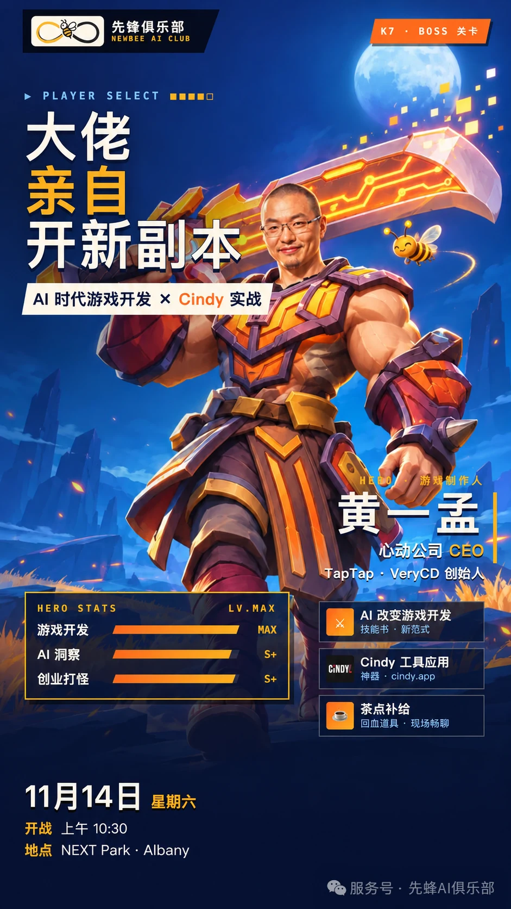

如果你脑海里有一个角色、一种玩法，甚至只是一个还没说清楚的念头——过去，它离“做成一款游戏”之间，隔着技术、团队、时间和成本。
而现在，AI正在把这段距离一点点缩短。
11月14日，先蜂AI俱乐部 K7 主题活动「大佬亲自开新副本」在奥克兰 Albany 的 NEXT Park 举行。心动公司 CEO、TapTap 与 VeryCD 创始人黄一孟，围绕 AI 时代的游戏开发展开分享；现场还加入 Cindy 实战，把讨论从趋势判断直接推到动手环节。
这不是一次“围观大佬”的活动。而是一场关于：普通人能不能把想法做出来的现场实验。
VENUE PARTNER · NEXT PARK
让创新的人，在这里遇见彼此
位于 Albany 的 NEXT Park，是一个面向创业者、科技团队与成长型企业的创新工作空间。灵活的办公与活动环境，让想法、人才和跨领域合作能够在这里自然连接。
特别感谢 NEXT Park 负责人陈前军博士 对本次活动的精心安排与支持，为大家提供了舒适、开放且充满交流氛围的活动空间。
STAGE 01 · PLAYER SELECT
当游戏开发，开始从“职业”变成“能力”
游戏开发长期被视为一件高门槛的事：程序、美术、策划、音乐、测试，每一项都需要专业积累，也意味着协作成本。AI的出现，并没有让这些能力失去价值，却正在重写它们之间的连接方式。
一个人可以更快地试出角色设定，更早看到玩法雏形，也能用低成本验证“这个想法到底好不好玩”。原本只能停留在脑海里的概念，第一次有机会迅速变成可以观看、可以操作、可以继续修改的东西。
这正是本期活动最让人兴奋的地方：AI不是替你完成创作，而是让你更早进入创作。
STAGE 02 · BOSS TALK
黄一孟：真正稀缺的，仍然是“你想做什么”
从 VeryCD 到 TapTap，再到持续观察内容与技术的变化，黄一孟的创业经历本身，就是一次次进入新副本。现场分享把游戏行业的长期经验，放进了今天的 AI 语境中：工具变化很快，但创作者需要回答的问题没有消失。
你想做一个怎样的世界？玩家为什么愿意留下？什么体验值得被反复打磨？当生产环节被 AI 加速，人的判断、审美与对乐趣的理解，反而更清楚地站到了舞台中央。
AI把“能不能做”不断变简单。接下来真正重要的是：你到底想做什么。
STAGE 03 · SKILL UNLOCKED
Cindy 实战：先做出来，再让作品升级
趋势只有落到手上，才会变成能力。Cindy 实战把抽象的“AI改变游戏开发”，拆成可以理解、可以上手、可以继续迭代的过程。
从描述想法，到生成内容；从第一次结果，到发现问题、调整表达、继续修改——现场看到的不是神奇的一键成品，而是一套更轻、更快的创作循环。
它最有价值的地方，或许不是某一个工具或按钮，而是让人建立一种新的行动习惯：别等到所有条件都齐备，先让想法拥有第一个版本。
STAGE 04 · NEW QUEST
从“想到”到“做到”，中间只差一次开始
本期活动的关键词，不只是游戏，也不只是 AI，而是“做到”。
当工具把第一步变得足够轻，创作不再只属于完整团队，也不必等到完美计划。你可以从一个角色、一段故事、一个小机制开始；先做出雏形，再在反馈中升级。
这套方法不只适用于游戏。对创业者、产品经理、内容创作者，甚至每一个有想法却总觉得“还没准备好”的人，它都是同一个提醒：把想法变成可以被看见的东西，世界才有机会回应你。
把想法变成作品的四个提醒
想法先落地：用最小版本验证核心体验
快速看反馈：从结果中发现真正的问题
反复做选择：工具给答案，人决定方向
保留人的部分：审美、判断、乐趣与表达
STAGE 05 · MISSION COMPLETE
副本结束，创作才刚刚开始
感谢黄一孟带来的行业观察与创作经验，感谢 Cindy 把工具变成清晰的现场实践，也感谢每一位来到 NEXT Park、在线参与并认真提问的朋友。
再次感谢 NEXT Park 负责人陈前军博士对本次活动的周到安排与大力支持。正是这样开放、友好的创新空间，让新的认知、真实的实践与高质量同行者能够聚在一起。
先蜂AI俱乐部想做的，始终不只是介绍一个新工具，而是让更多人有机会接触前沿认知、亲手实践，并在高质量同行者之间找到继续行动的勇气。
K7 已通关。下一张地图，我们继续一起开。
你就是自己新副本的主角。

想参加先蜂会下一场线下活动？先看奥克兰活动的首次参加指南，再按当期公告确认场地和参加条件。
本页根据俱乐部提供的 K7 文章归档、原文配图与 K7.mp4 整理。活动于 2026 年 11 月 14 日举行，官网回顾于 11 月 16 日发布。封面为活动视频截图，游戏角色海报为创意插画。